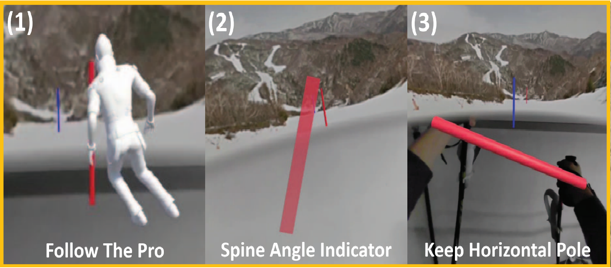

RESEARCH / 02
Sports Interaction
動きを捉え、身体の感覚を可視化し、上達につなげる。スキー、ゴルフ、足圧センシングを軸に、スポーツと技術の接点を探求します。
01 / Skiing
Skiing
雪上の動きを、学べる情報へ。姿勢の可視化とマルチモーダルデータを通じた技能支援。
02 / Golf
Golf
スイングの「見えない」を見えるように。AR・VRを通じて、動きと身体感覚の理解を支えます。
03 / Foot Pressure
Foot Pressure
足元から、全身の動きへ。インソールセンサを用いた姿勢推定とフィードバック。